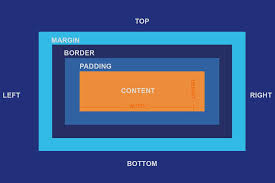

In CSS, the term "box model" is used when talking about design and layout.
The CSS box model is essentially a box that wraps around every HTML element. It consists of: content, padding, borders and margins. The following image illustrates the box model.
Content writing is the process of creating written material for various purposes, including marketing, education, and entertainment, aiming to attract, engage, and inform an audience.
What is Content Writing? Definition: Content writing involves crafting written content like articles, blog posts, ebooks, white papers, case studies, and how-to guides. Purpose: The primary goal is to inform, educate, entertain, or persuade an audience to take a specific action.